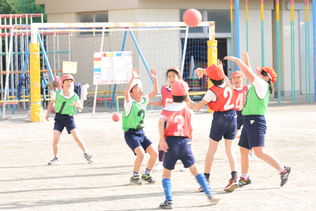
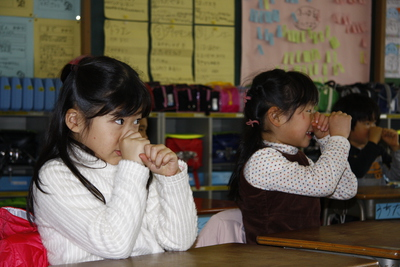

学校支援本部とは
学校支援本部 とはどんな組織なのでしょうか。

校長・副校長・教員の負担を減らし、 教員が授業や部活動、生活指導などに専念し、 児童・生徒と向き合う時間を増やすことを目的とする仕組みが、 学校支援本部 です。
それでは、行政や杉並区がどのようなとりくみをおこなって来たのでしょうか。
文科省のとりくみ
平成19年度に文部科学省は、
教育委員会、PTA地元企業等の支援団体の協力を得て、
全国の中学校区単位（10,000校区）に学校との連携体制の構築を図り、
地域全体で学校教育を支援する体制づくりを推進する
事業を 計画立案しました。その活動の一つが「
学校支援地域本部
（仮称）の設置」です。
学校支援地域本部
（仮称）には、学校長、教職員、PTA関係者、公民館長、
自治会等関係者で構成する地域教育会議を置き、人材バンクの作成、
学校支援事業の企画立案をするとともに、地域コーディネーターが
学校と学校支援ボランティアのコーディネートを行う
とされています。
また、学校支援ボランティアが支援し実施する事業は、
学習支援活動、部活動指導、環境整備、登下校安全確保、
学校・地域との合同行事の開催
とされています。
出典
文部科学省ホームページ/政策について/ 政策評価 /文部科学省の政策評価制度について /文部科学省事業評価書－平成20年度新規・拡充等－ /事業評価結果/ 学校支援地域本部(仮称)事業(新規)(PDF:285KB) http://www.mext.go.jp/a_menu/hyouka/kekka/07110104.htm
杉並区のとりくみ
杉並区の基本構想である「杉並区21世紀ビジョン」を具現化した 「すぎなみ五つ星プラン（基本計画・実施計画）」で掲げた 「地域ぐるみで教育立区」の考えのもと、 平成16年度に杉並区教育委員会は「杉並区教育ビジョン」を策定し、 『人が育ち、人が活きる杉並区』を将来像に掲げ、 その大きな柱の一つに「地域ぐるみで教育立区」を据えました。
- 平成16年度「杉並区教育ビジョン」を策定
- 平成17年度 教育改革アクションプランを改定した「教育ビジョン推進計画」（平成17年度～19年度の3年間）を策定
- 平成18年度 教育ビジョン推進計画の平成19年度分を修正
- 平成20年度 教育ビジョン推進計画を改定（平成20年度～22年度の3年間）
平成22年度を目標に、重点的に取り組む施策の方向を示しています。

平成20年度～22年度の教育ビジョン推進計画の内容は以下のとおりです。
目標1 力のある教師を育てます
- 指導教授制の実施 〔重点事業〕
- 授業向上支援事業の実施 〔重点事業〕
- 杉並師範館の運営
- 区独自教員の採用
目標2 質の高い教育を行います
- 30人程度学級の実施 〔重点事業〕
- 小中一貫・幼小連携教育の推進 〔重点事業〕
- 特別支援教育の充実 〔重点事業〕
- フレッシュ補助教員の活用
- 学力・体力向上支援
- 心の教育の充実
- 特色ある教育活動の推進
- 食育・健康教育の充実
- 部活動の充実
- 就学前教育の推進
目標3 学校の経営力を高めます
- 学校評価の充実 〔重点事業〕
- 副校長二人制の実施 〔重点事業〕
- 教育SATの充実・スクールソーシャルワーカーの配置
- 民間人校長の登用
- 管理職の資質向上・力量形成
目標4 地域と協働する学校をつくります
- 学校支援本部 の拡充 〔重点事業〕
- 地域運営学校(コミュニティ･スクール)の拡充 〔重点事業〕
- 地区教育委員会（仮称）の設置
目標5 学校の教育環境を整えます
- 学校規模の適正化・適正配置 〔重点事業〕
- エコスクールの推進 〔重点事業〕
- 学校ITの推進
- 校舎の改築等
目標6 共に育つ豊かな地域づくりを進めます
- 科学館基本構想の推進 〔重点事業〕
- スポーツ施設・体制の整備 〔重点事業〕
- 図書館情報化の推進
- 図書館の建設・整備
- 読書活動の推進
- 生涯学習の推進
- 子育て・家庭教育支援
- 青年期の社会適応力の向上
- 郷土博物館の活用促進
- 文化財保護の推進
 Copyright (c) 2010 たかさん支援隊. All rights reserved.
Copyright (c) 2010 たかさん支援隊. All rights reserved.